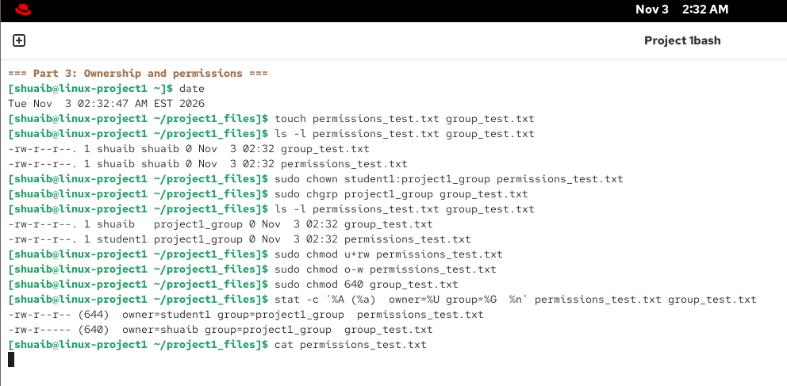

Environment and scope
A working VM, then repeatable administration checks.
I deployed RHEL 10 in VMware Workstation with two virtual CPUs, 8 GB RAM, a 40 GB virtual disk, and NAT networking. The source report includes four successful ICMP replies with 0% loss in its connectivity capture.
The wider exercise also covered users and groups, directory navigation, local signed DVD repositories, package installation and removal, and dependency checks. This page focuses on the filesystem evidence rather than reproducing the full class submission.
Filesystem links
The inode output makes the difference visible.
I created a symbolic link named hosts_link and a hard link named hosts_hardlink, both referring to /etc/hosts. The final listing and stat output show that the original file and hard link share inode 67243273 and a link count of 2. The symbolic link has a separate inode, 2822905.
sudo ln /etc/hosts hosts_hardlink
ln -s /etc/hosts hosts_link
ls -li /etc/hosts hosts_hardlink hosts_link
stat -c '%n -> inode %i, %h hard links' /etc/hosts hosts_hardlink
Ownership and permissions
Change ownership, inspect the resulting mode, then test access.
I assigned user and group ownership with chown and chgrp, removed other-write permission from one file, and set the group-test file to mode 640. The final stat output records 644 for permissions_test.txt and 640 for group_test.txt.
| Mode 644 | Owner read/write; group read; others read |
|---|---|
| Mode 640 | Owner read/write; group read; no permissions for others |
| Verification | Human-readable and octal modes printed with stat -c '%A (%a)' |

Operational takeaway
Verify state at the filesystem, not from the command's exit alone.
The useful evidence is the state after the change: matching inode numbers and link counts for hard links, distinct inode identity for symbolic links, and explicit owner/group/mode output after permission edits. Those checks are directly reusable when troubleshooting mounted configuration files, secrets, and service-readable resources.